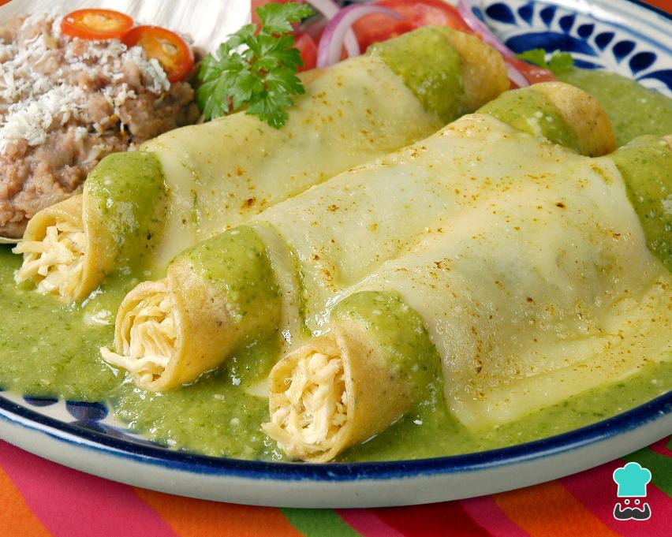

Inicio
Enchiladas suizas

Descripción
Las enchiladas suizas son un platillo mexicano delicioso y cremoso, compuesto por tortillas rellenas de pollo, bañadas en salsa verde y cubiertas con queso gratinado. Perfectas para una comida casera llena de sabor.
Ingredientes (para 4 porciones)
- 8 tortillas de maíz
- 2 tazas de pollo desmenuzado (cocido y sazonado)
- 2 tazas de salsa verde (puede ser casera o enlatada)
- 1 taza de crema ácida o crema fresca
- 1 1/2 tazas de queso manchego o mozzarella rallado
- 1/4 de cebolla picada (opcional, para decorar)
- 1 ramita de cilantro fresco (opcional, para decorar)
- Aceite en spray o un poco de aceite vegetal (para freír las tortillas)
Pasos
- Precalentar el horno:
- Precalienta el horno a 180°C (350°F).
- Preparar las tortillas:
-
Calienta un poco de aceite en una sartén y fríe ligeramente las tortillas para que se ablanden (unos 10-15 segundos por lado). Escúrrelas en papel absorbente.
- Rellenar las tortillas:
- Rellena cada tortilla con el pollo desmenuzado y dóblalas en forma de rollo.
- Preparar la salsa cremosa:
- En un tazón, mezcla la salsa verde con la crema ácida hasta obtener una salsa homogénea.
- Armar las enchiladas:
- Coloca las enchiladas en un refractario o molde para horno.
- Baña las enchiladas con la salsa cremosa, asegurándote de cubrirlas por completo.
- Agregar el queso:
- Espolvorea el queso rallado sobre las enchiladas, cubriéndolas generosamente.
- Gratinar:
-
Hornea las enchiladas durante 10-15 minutos, o hasta que el queso se derrita y se dore ligeramente.
- Decorar y servir:
- Retira del horno y decora con cebolla picada y cilantro fresco si lo deseas. Sirve caliente.